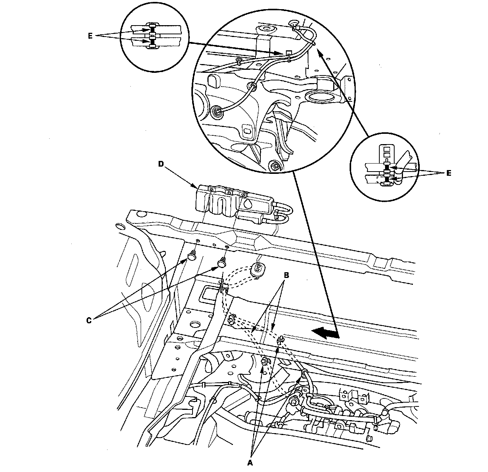

Differential Vent Box: Service and Repair
Rear Differential Breather Box and Hose Replacement1. Remove the cargo floor lid and the cargo box.
2. Remove the breather hose clips (A) then disconnect the breather hose (B).

3. Remove the breather box clips (C) and the breather box (D).
4. Install the breather box then connect the breather hose and the breather hose clips.
5. Align the point mark (E) on the breather hose as shown.
6. Make sure that all the hoses are properly routed, clipped into place, and not pinched.
7. Install the cargo floor lid and the cargo box.